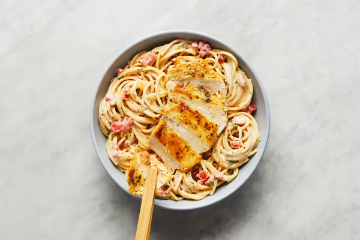

Creamy Aglio E Olio Chicken Pasta
with Chili Flakes, Tomato, & Chopped Parsley

Description
Spaghetti aglio e olio translates to “spaghetti with garlic and oil”—and that about sums it up! This traditional, rustic dish from Naples turns a few classic ingredients into something spectacular. In this twist, our chefs used a light hand, giving fresh tomato, parsley, and chili flakes a chance to shine in a simple cream sauce. Italian-seasoned chicken is served over top for a mealtime concept that you won’t need an interpreter to understand: Less really is more!
Recipe Credit
Ingredients
- 1/4 ounce of Parsley
- 4 cloves of Garlic
- 6 ounces of Spaghetti
- 1 teaspoon of Chili Flakes
- 1 Tomato
- 10 ounces of Chicken Cutlets
- 1 tablespoon of Italian Seasoning
- 4 ounces of Cream Sauce Base
- 1 teaspoon of Cooking Oil
- 1/2 tablespoon of Butter
- Pepper
- 2 teaspoons of Olive Oil
- Kosher Salt
Steps
- • Bring a large pot of salted water to a boil. Wash and dry produce. • Finely dice tomato. Peel and thinly slice garlic. Pick parsley leaves from stems; roughly chop leaves.
- • Pat chicken dry with paper towels; season all over with half the Italian Seasoning, salt (we used 1⁄4 tsp), and pepper. • Heat a drizzle of oil in a large pan over medium-high heat. Add chicken and cook until browned and cooked through, 3-5 minutes per side. TIP: If chicken starts to brown too quickly, lower heat to medium and cover pan with lid after flipping chicken. • Transfer to a cutting board and tent with foil to keep warm. Wipe out pan.
- • Once water is boiling, add spaghetti to pot. Cook, stirring occasionally, until al dente, 9-11 minutes. Reserve 1⁄2 cup pasta cooking water, then drain pasta.
- • Heat a large drizzle of olive oil in pan used for chicken over medium low. Add tomato, garlic, and chili flakes to taste (we used 1⁄2 tsp; add a pinch more if you like things spicy), and cook, stirring occasionally, until softened and fragrant, 2-3 minutes. • Stir in cream sauce base and 1⁄4 cup reserved pasta cooking water. Bring to a simmer, then remove from heat. Taste and season with salt and pepper.
- • Stir drained spaghetti, parsley, and 1⁄2 TBSP butter into pan with sauce. Taste and season with salt and pepper if desired. TIP: If needed, stir in more reserved cooking water a splash at a time until pasta is coated in a creamy sauce.
- • Thinly slice chicken crosswise. • Divide pasta between bowls; top with chicken and serve.